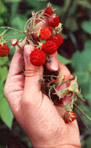

From Mother No. 60
Thanks to the late Euell Gibbons, many people are aware of the edibility of some wild plants. Here are a number of good reasons to learn more about the subject.
Having taught courses in foraging for some years, I've been challenged many times with the query, "How do you know this plant is nutritious?" In most cases, I could only answer by quoting the author of a book on wild foods as my source . . . a writer who, as often as not, referred to an earlier "authority" who, in turn, may well have based his or her statements on folklore.
This lack of solid data led me to make a systematic collection of all available scientific research on the subject, and then to compare the nutritional composition of each particular wild edible with the Recommended Dietary Allowance (RDA) established by the National Academy of Sciences' Food and Nutrition Board . . . which represents a healthy person's absolute minimum requirement for nutrients.
A typical adult male, for example, needs 5,000 I.U. (International Units) of vitamin A per day, and he can get much more than that in a scant half cup of dandelion greens! Or consider amaranth, the weed that's the bane of so many farmers: Just 10 ounces of the leaves of this prolific plant can provide an adult's daily calcium, plus almost all of the iron required by a man and half that needed by a woman . . . while only 3.5 ounces of the greens will satisfy the daily requirements for vitamin A, thiamine, and ascorbic acid!
And, of course, nutrition isn't the only reason to sample nature's pantry. Wild foods offer a wide range of interesting and distinctive flavors . . . many of which, in my opinion, equal or surpass those of comparable garden fruits, berries, and vegetables. So grab a gathering sack, get yourself a couple of reliable field guides (see Access, page 140, for suggestions), and "go wild." It's a great way to please your palate while doing your body proud.
CAUTION: The listing of a plant in this article doesn't necessarily mean that it's edible under all circumstances! Readers should inform themselves fully, using a pair or more of reliable field guides, as to any wild food's safety before consuming it. Frequently a plant may be poisonous at one stage of development and edible at another, or-as is the case with domestic rhubarb and potatoes-one portion of the species may be delicious while other sections are poisonous.
The Nutritional Composition of Wild Plants
|
 |
|
|